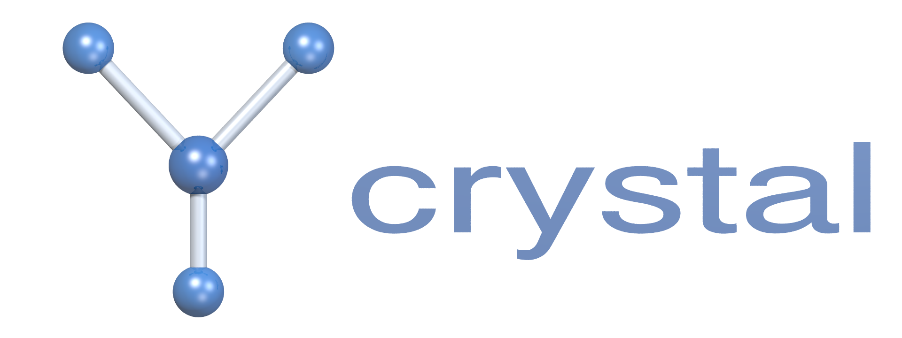
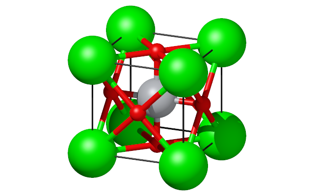

Ycrystal¶

Ycrystal is a desktop application for Linux, macOS, and Windows for composing crystal-structure figures and rendering the current view with POV-Ray. The live interface uses PySide6 and VTK; the exported scene keeps the same orthographic camera and displayed atoms.
Early development. You can open POSCAR/CONTCAR, CIF, and Quantum ESPRESSO
inputs (any ibrav), save self-contained .ycrystal projects,
navigate, select and hide
individual displayed atoms, export scenes, and render PNG, PDF, or JPEG figures. Supercell repetitions,
periodic bonds, cell-edge modes, and view-direction controls
are available, as are an output frame, a POV-Ray preview, cancellable renders, and
galleries of 30 materials and 12 environments with POV-Ray thumbnails, per-element and
per-atom materials, floors, skies, and lighting controls, and an
element legend for the figure. Drag the a/b/c handles to add
cells, rotate freely or about a lattice/Cartesian axis, and reuse a figure's style with
another structure, in the window or from the command line;
every figure change is undoable.
- Install and launch on Linux Mint or macOS.
- Follow Your first crystal figure using the built-in SrTiO3 sample.
- Find controls, supported formats, and rendering instructions; save a figure with a self-contained snapshot and a provenance record for reproducible figures.
- Read the architecture, try the Python examples, or consult the API reference.
- See troubleshooting and limitations and the progress record and roadmap for the current scope and evidence.

This is an actual 640 × 400 POV-Ray render, generated from Ycrystal's shared scene and default camera. The live viewport uses approximate lighting and also shows orientation axes. Regenerate the image.
The Python interfaces are evolving developer functionality. They do not currently carry a stable public API guarantee. This site is built from the repository and published at ymatterlab.github.io/ycrystal.